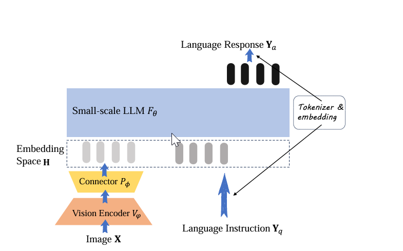

Why did I want to present this paper?
The TinyLLaVA paper shows the usual multimodeal model of image and text in and text out but there are many more modalities. I think sometimes it’s hard to compete with the larger companies that have the resources to train ever larger models as it raises the bar to such a high level, it’s not impossible but there are other ways. Most of the larger companies concentrate on these modalities: images in colour (RGB), audio speech, and images and video as that’s the largest market. There are a whole lot more modalities that are being neglected and this leaves a lot of opportunities. Huggingface has 10,000’s of models that can be used as ingredients and you can easily train your own small model with your own data. This paper shows how to do it and I think it’s a great starting point for anyone who wants to get into multimodal models. I have a passion for understanding the physical world through IOT and robotics as a hobby and work. We humans have 5 senses to understand the world but there are many more, for example :
Vision: Humans only see Blue (Approximately 450–495 nm) to Red (Approximately 620–750 nm), but there’s a whole range from Gamma Rays (less than 0.01 nanometers (nm)), X-rays (0.01 nm to 10 nm), Ultraviolet Light (10 nm to 400 nm), through to the longer wavelengths like Infrared Light (750 nm to 1 millimeter (mm)), Microwaves (1 mm to 1 meter), and Radio Waves (1 meter to 100 kilometers (km) or more), each with its own unique applications and phenomena in the electromagnetic spectrum.
Vibration: Humans primarily sense vibration through touch but our range is limited, feeling oscillations or movements through solid objects. Beyond this, technologies like seismographs can detect vibrations in the earth, used in earthquake detection and analysis, while various animals, such as snakes and elephants, use ground vibrations for communication and to sense approaching threats.
Magnetoreception: Some animals, such as migratory birds, turtles, and bees, have the ability to detect the Earth’s magnetic field, aiding in navigation across great distances. This sense, known as magnetoreception, is something humans are not naturally equipped with, but technology can emulate this through devices that measure magnetic fields for navigation and mapping.
Electroreception: Certain aquatic animals, like sharks and rays, possess an ability known as electroreception, which allows them to detect electrical fields created by other organisms. This sensory modality is crucial for hunting as it helps these predators locate prey hidden in sand or mud.
Chemical Sensing (Gustation and Olfaction): Beyond human taste and smell, chemical sensors can detect and analyze substances in the environment, with applications ranging from detecting pollutants in the air and water to analyzing soil composition in agriculture. This also includes technologies in artificial noses and tongues, which use sensors to mimic human olfaction and gustation for food safety inspections and quality control.
Thermal Sensing : While humans sense temperature primarily through the skin, certain species like pit vipers and some insects can detect infrared radiation, effectively “seeing” heat. Technological adaptations of this include thermal imaging cameras, which are used in a variety of fields, from medical diagnostics to surveillance, by detecting heat emitted by objects.
and many more different types.
Overview
Every week we meet on the Fast.ai group and discuss all things deep learning and every other week we have reading week where one of us presents a paper. This week it was my turn to read the paper “TinyLLaVA: A Framework of Small-scale Large Multimodal Models”. There are a lot of models commercial and open source trying to solve the multimodal problem. The TinyLLava multimodal model takes in an image of what you want to understand along with your text (your question) and outputs an answer in the text so you can have a back-and-forth questioning about the image, like a chatbot. The main thrust of the industry has been to create bigger and bigger models in the hope that they will be able to understand more and more about the image. However, the authors of this paper have taken a different approach and have created an interesting architecture that can be followed to create your own small multimodal models that to solve the multimodal problem. It paper and github repository works abit like a cooking recipe, where you have the ingredients and the processes you use to mix and convert those ingredients into the final product but in this instance, we can change the ingredients (the models) and change the process if we like to achieve solve different problems or leave them the same.
Importance of small-scale LMMs (Large Multimodal Models)
Large models are great and have every chance to create better understanding but they are expensive and time-consuming (potentially many months) to train making them prohibitive to people like myself who don’t have access to the resources. Smaller models can perform as well as larger models providing they have the right data, the right architecture and applied to the right problem. This lowers the results entry point as it can be done on modest hardware and much quicker meaning more people can get involved in creating their own experiments to solve their own multimodal problems. It also has the benefits of cheaper inference, less energy consumption and faster responce times on lesser hardware. Hugging Face has 10000’s of models that can be used for ingredients in producing your own multimodal models. ## Architecture Deep Dive: Building Blocks of TinyLLaVA
Detailed look at the model components: Vision Encoders, Small-Scale LLMs, Connectors

Overview of the Training Data and Methodologies
- Vision encoder: The aim of the vision encoder is to understand what is happening in an image and output a text vector of its understanding.
- Connector: The aim of the connector is to take the output from the vision encoder and align it with the shared project embedding space.
- Small-scale LMMs: The aim of the small-scale LMMs is to take the text vector from the shared embedding space and understand it and output a text of its understanding.
Overview of the Training Data and Methodologies
TinyLLaVA leverages a combination of pre-training and supervised fine-tuning stages. Pre-training aligns the vision and text information in an embedding space using image-caption style data, which helps the model learn basic associations. Supervised fine-tuning then adjusts the model using image-text pairs in a multi-turn conversation style, which sharpens its ability to handle complex queries.
Comparison of Training Recipes
The framework tests two main recipes :
- Base Recipe: Keeps the vision encoder and small-scale LLM frozen during pre-training, focusing updates on the connector.
- Share Recipe: Starts with the base recipe’s pretrained connector but allows updates to parts of the vision encoder and the LLM during training.
The empirical results demonstrate that while both recipes are effective, the share recipe generally provides superior performance by dynamically adapting more components of the model.
Ablation Studies and Empirical Results
Through ablation studies, the researchers found that tweaking the size and type of the vision encoder and the LLM can have significant impacts on the model’s effectiveness. For instance, using different sizes of LMMs from the TinyLLaVA series like Phi-2 and TinyLlama showed varied performances across benchmarks, highlighting the importance of model selection based on specific needs.
More information can be found here including the paper, the github repository and the presentation.
Link to the paper Link to the GitHub repository Link to the presentation